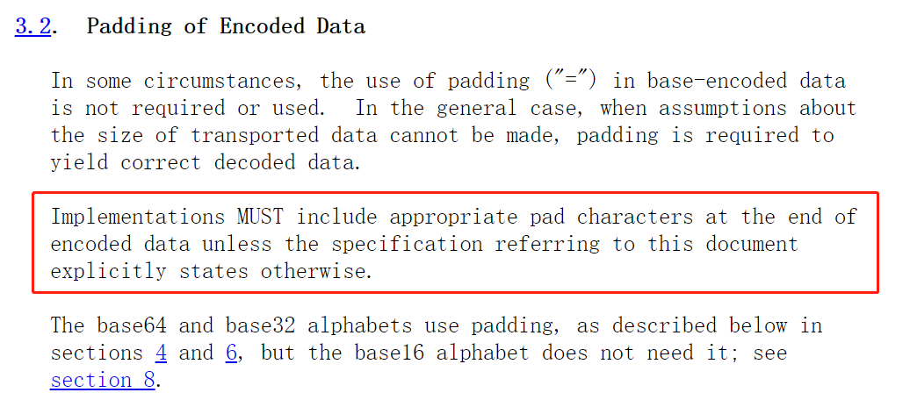
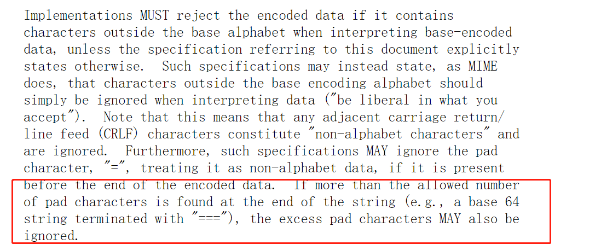

文章首发于奇安信攻防社区，链接https://forum.butian.net/share/639
本文将查看RFC4648对于base64编码的规范，并选取多种base64解码器分析其在实现上的不规范性，并如何通过这种不规范来绕过WAF。
Base64编码
简单来说Base64编码，就是简单的3换4，将三个char共24bit，分成4个部分，每个部分6个bit，所以总共可以标识0-63共64个数，然后重新进行编码，由于当存在不足3个char时，是无法组成24个bit的，所以最后会使用=作为padding进行补充，标准的base64编码字母标为
WAF拦截机制
由于目前大部分waf还是基于规则进行拦截的，其中一部分waf没有实现对请求数据的处理，比如遇到base64编码的数据，并不会解码，而是直接拿base64编码的数据和规则进行匹配。如果waf实现了对base64解码的处理，那么遇到base64编码直接进行解码，就可以拿解码后的数据与规则进行匹配，这样能够节省规则的编写。这里为了能更好理解，简单使用waf拦截蚁剑Webshell的base64-php版本请求进行举例
首先拦截这种请求，如果规则中有base64_decode函数等关键字，是肯定能够拦截的。由于本文主要探讨如何绕过base64编码，所以这里主要看如何让waf拦截这个经过base64编码的参数。解码下这个参数值
1 | @ini_set("display_errors", "0");@set_time_limit(0);$opdir=@ini_get("open_basedir");if($opdir) {$oparr=preg_split("/\\\\\\\\|\\//",$opdir);$ocwd=dirname($_SERVER["SCRIPT_FILENAME"]);$tmdir=".d47b6980f578";@mkdir($tmdir);@chdir($tmdir);@ini_set("open_basedir","..");for($i=0;$i<sizeof($oparr);$i++){@chdir("..");}@ini_set("open_basedir","/");@rmdir($ocwd."/".$tmdir);};function asenc($out){return @base64_encode($out);};function asoutput(){$output=ob_get_contents();ob_end_clean();echo "25606f"."0a6023";echo @asenc($output);echo "d00298"."01067d";}ob_start();try{$D=dirname($_SERVER["SCRIPT_FILENAME"]);if($D=="")$D=dirname($_SERVER["PATH_TRANSLATED"]);$R="{$D}\t";if(substr($D,0,1)!="/"){foreach(range("C","Z")as $L)if(is_dir("{$L}:"))$R.="{$L}:";}else{$R.="/";}$R.="\t";$u=(function_exists("posix_getegid"))?@posix_getpwuid(@posix_geteuid()):"";$s=($u)?$u["name"]:@get_current_user();$R.=php_uname();$R.="\t{$s}";echo $R;;}catch(Exception $e){echo "ERROR://".$e->getMessage();};asoutput();die(); |
对于不支持base64编码的waf来说，可以直接选取@ini_set(的base64编码形式QGluaV9zZXQo作为关键字拦截，这样这种形式的webshell请求将会被拦截。
对于支持base64编码的waf来说，可以直接使用ini_set(作为关键字拦截，这样当遇到base64编码数据，解码之后就会命中ini_set(规则。
解码器
Base64解码时，就是将4个base64字母，共24bit，分为3个部分，每个部分8个bit，用来代表一个字符。但是当编码后的数据不是标准的规范格式解码器会如何工作呢？
为了能够更全面的测试各种解码器的解析方式，这里选取了5种解码器
- php: base64_decode()
- python: base64.b64decode()
- go: encoding/base64.StdEncoding.DecodeString()
- java1: java.util.Base64.getDecoder().decode()
- java2: sun.misc.BASE64Decoder().decode(）
解析方式
根据RFC4648中的规范，总结出5个维度来进行测试，我们用简单的字符串test，其base64编码后的数据为dGVzdA==作为基础数据。
换行符
在base64编码中的数据中，是不允许含有换行符的，除非根据本规范具体规范在特定数量字符后面添加换行符。其实这种场景时常见的，如果base64编码数据过长，可以直接一行表示，有时可能会将过长的数据进行换行了。
测试数据dG\nVzdA==，结果为
- php: test
- python: test
- go: test
- java1: 报错
- java2: 非test
接着使用dG\n\r\tVzdA==测试可以解码的
- php: test
- python: test
- go: 报错
接着测试dG\n\rVzdA==，发现go可以解码正常
这里特殊的就是go，java两种都不支持，php/python全支持，而go只支持\r\n，那么如何用这种特性来绕过waf呢？
用上面webshell请求来测试，由于使用的php版本，发送以下数据
在base64数据中添加\n，当然这个可以在随意位置添加，对于不支持base64解码的waf，自然无法匹配中QGluaV9zZXQo，对于支持的，如果waf像java1那种解析方式，就会解析失败，自然无法匹配中规则。
非字母表字符（除\r\n）
按照规定，实现MUST拒绝所有非字母表中的字符，当然也有特殊情况进行忽略。上面我们已经测了\r\n这种特殊的回车换行控制符.
接着测试dG~-VzdA==
结果
- php: test
- python3: test
- go: 报错
- java1: 报错
- java2: 非test
对于go/java1/java2来说是符合预期的，但是python和php即使遇到非字母表字符，就会直接忽略，这会像rfc说的那样，夹带一些危险字符，或用来绕过waf。
这种绕过waf的方式与上面是相似的，只要把\n换成非字母表字符即可。
Padding 不足

这里rfc并没有规定解码器在遇到Padding不足的时候应该怎么解码，但是规定了，实现必须在末尾加上适当的填充字符编码数据。是不是就可以理解成，在需要Padding时，这个Padding是必须增加的，那么解码器在解码时遇到Padding不足的时候应该认定为不正确的base64编码数据。当然并不是所有解码器都是这么实现，因为我们见过很多不写Padding的情况。
测试dGVzdA
结果为
- php: test
- python: 报错
- go: 报错
- java1: test
- java2: 非test
可以看到php依旧坚挺，还是能够解码成功，但是java1也能解码成功了，python虽然支持非字母表字符，却不支持Padding缺少
这种方式绕过，只能适合支持base64解码的waf，并且解码器并不支持padding不足，但是后端支持
Padding过多

可以看到，如果忽略了非字母表字符，那么多余的Padding字符也将会被忽略。
接着测试dGVzdA===
- php: test
- python: test
- go: 报错
- java1: 报错
- java2: test
可以看到，结果与第二部分非字母表字符部分是基本一致的，这是符合rfc的，但是java2却出现了不同，其他情况，虽然没有报错，但是都没有正确解码出test字符串，但是Padding过多情况下，竟然解码出了test
这种绕过和上面padding不足类似，绕过得场景也是一样得，只需要增加padding即可
Padding后增加编码数据
padding之所有叫padding，就是因为在末尾时不够编码，所以进行的填充，也就是说Padding后不应该含有正确格式base64编码数据。
接着测试dGVzdA==dGVzdA==
- php: testFW7@
- python: test
- go: 报错
- java1: 报错
- java2: testtest
很有趣的是，java2把重复的test都解码成功了，而python遇到padding直接后面不要了
总结
目前来看，go是遇到不规范的格式，直接报错，但是对于回车换行可以忽略，java1类似于go，但是有个补全padding的功能，python和php类似都会忽略非字母，也会忽略多余的padding，但是python不具有补全padding的功能，而java2从解码结果来看，就是没有任何容错，就是有什么解码什么，padding不够按照padding不够的解析，padding后有数据就继续解析。这里有个问题，就是php在最后一种情况下，既没有像python那样忽略padding后数据，也没有像java2那样解析出正常数据，有兴趣的同志可以看下具体实现。
可以看到不同的解码器在实现上差距非常大，所以如果waf在实现上和后端存在差异，那么我们就可以使用这种不规范的数据进行waf的绕过，或者危险数据的注入。